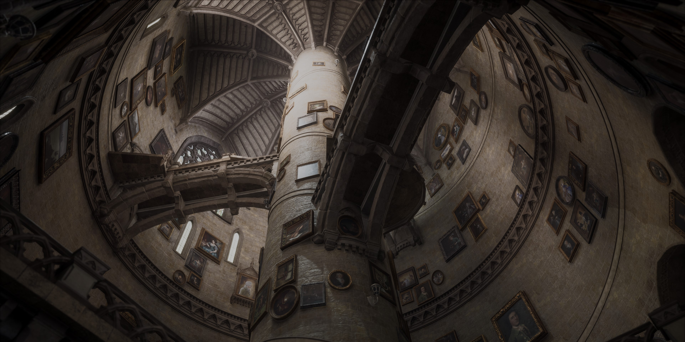

Nuestra historia
700 años de educacion mágica
Fundadores de Hogwarts

Godric Gryffindor
Helga Hufflepuff
Rowena Ravenclaw
Salazar Slytherin
La copa de casas
En el corazón de la vida estudiantil en Hogwarts se encuentra la prestigiosa Copa de las Casas, una emocionante competencia que une a los estudiantes en un espíritu de lealtad y excelencia. Cada casa, ya sea Gryffindor, Hufflepuff, Ravenclaw o Slytherin, compite durante todo el año en desafíos mágicos y académicos para ganar puntos valiosos. La casa que acumule la mayor cantidad de puntos al final del año será galardonada con la codiciada Copa de la Casa. ¡Prepárate para vivir momentos emocionantes, desafíos asombrosos y el espíritu inigualable de la competencia mágica en Hogwarts! ¡Que comiencen los juegos!
Alumnos que pasaron a la historia
Gellert Grindelwald
Conocido por ser un poderoso mago oscuro y por sus ideales controvertidos sobre la supremacía de los magos. Fue un estudiante de Slytherin antes de convertirse en uno de los mayores antagonistas en la historia mágica.
Merlín
Un legendario mago y hechicero de Gryffindor, conocido por sus habilidades excepcionales en la magia. Se le atribuyen numerosos logros, y su nombre es sinónimo de grandeza en el mundo mágico.
Newt Scamander
Autor de "Animales fantásticos y dónde encontrarlos", Newt es un magizoólogo de Hufflepuff que ha contribuido significativamente al estudio y la protección de criaturas mágicas en el mundo mágico.

Cedric Diggory
Reconocido por su valentía y caballerosidad, Cedric Diggory fue un estudiante destacado de Hufflepuff en Hogwarts. Participó en el Torneo de los Tres Magos y dejó una huella imborrable en la historia mágica por su nobleza y sacrificio.